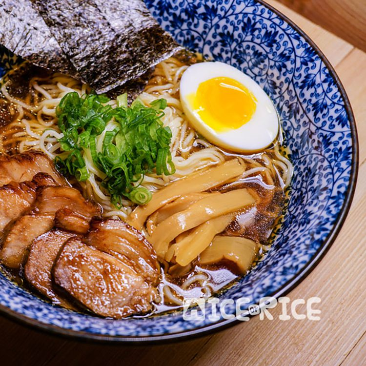

Ramen

We're going to go over how to make ramen in a pressure cooker. It's easy,
it's quick, it's simple and boy do we hope it's tasty.
Ingredients
Broth
- 1 (2 1/2 pound) whole chicken, cut into pieces
- 1 cup dried scallops
- 1 cup dried anchovies
- ¼ cup dried shrimp
- ¼ cup bonito flakes
- 1 (1 inch) piece ginger, thinly slices, divided
- 1 (4 inch) piece dashi kombu (dried kelp)
- 3 quarts water
Tare Sauce
- 1 cup soy sauce
- ½ cup sake
- 8 green onions
- ½ cup bonito flakes
- ¼ cup white sugar
- 8 cloves garlic, crushed
- 1 (4 inch) piece dashi kombu (dried kelp)
- 6 (3 ounce) packages cooked ramen noodles, or to taste
Steps
-
Place chicken, scallops, anchovies, shrimp, bonito flakes, half the ginger, and kombu in an electric pressure cooker.
Add water; close and lock the lid. Select the Soup setting; set timer
for 90 minutes according to manufacturer's instructions. Allow 10 to 15 minutes for pressure to build.
- Release pressure using the natural-release method according to manufacturer's instructions, 10 to 40 minutes.
Strain broth through a colander or fine-mesh sieve. Skim the fatty oil off the top of the broth.
-
Combine soy sauce, mirin, sake, green onions, bonito flakes, sugar, garlic,
and kombu in a medium saucepan over high heat. Bring to a boil.
Reduce heat to low and simmer until flavors blend, about 10 minutes.
Strain tare sauce through a fine-mesh sieve into a bowl.
- Pour 2 tablespoons of tare sauce into a large bowl. Ladle in about 2 cups of broth.
Add 1/6 of the ramen noodles. Repeat with remaining tare, broth, and ramen.
Return to Recipes